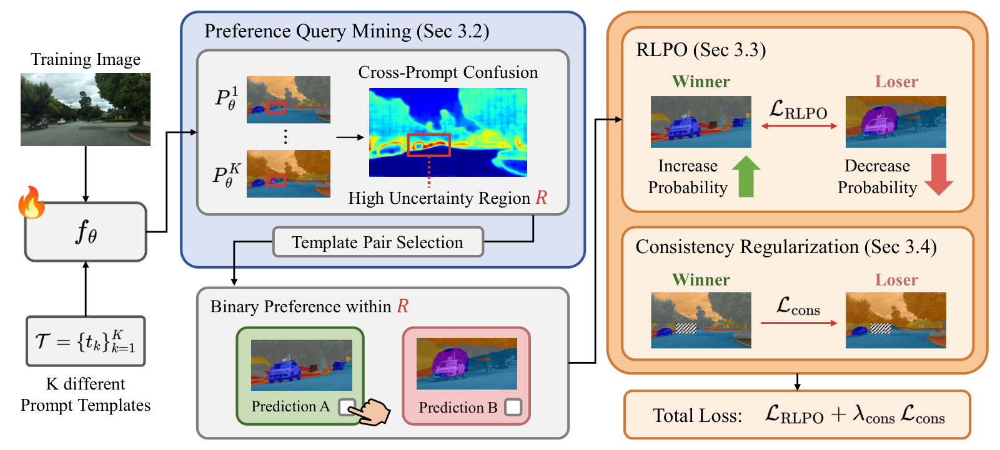

Supervision
Binary preferences, no masks
An annotator only picks which of two candidate masks better matches the intended class inside one small region.
We adapt open-vocabulary segmentation models to specialized domains from binary A/B preferences instead of pixel masks. The candidates to compare come for free: different prompt templates already disagree.
Open-vocabulary semantic segmentation (OVSS) enables pixel-level prediction over arbitrary text-specified vocabularies and has shown strong generalization on common benchmarks. However, OVSS performance often degrades in specialized domains such as medical imaging, remote sensing, and industrial inspection, where dense pixel-level masks for adaptation are costly to obtain and require domain-specific expertise. We propose a preference-guided adaptation framework that replaces dense mask supervision with binary preferences. We observe that different prompt templates produce systematically different segmentations for the same image, a phenomenon we call prompt disagreement, and we repurpose it as a built-in source of preference supervision. Building on this, we mine localized preference queries from regions of high cross-template uncertainty, and adapt the OVSS model with Region-Localized Preference Optimization (RLPO) together with consistency regularization that stabilizes updates outside the queried region. Across extensive experiments on the MESS benchmark, the proposed method achieves consistent gains across diverse OVSS backbones without any pixel-level annotation, and remains effective under noisy preferences.
An annotator only picks which of two candidate masks better matches the intended class inside one small region.
The 14 prompt templates of the OVSS model already produce different masks. Where they disagree most, we ask.
A DPO-style loss on class-balanced region scores inside the query box, plus a consistency term that keeps the rest of the image stable.
mean mIoU over zero-shot for CAT-Seg ViT-L/14, with gains on all four SAN and CAT-Seg backbones.
Zero-shot CAT-Seg ViT-L/14. Each row is one training image and one class; only the prompt template changes. The framed pair (A, B) is the query our method asks about, chosen inside the box where the 14 prompts disagree most (right).
Training images arrive one at a time. For each image we mine one localized query, collect one binary answer, and update lightweight adapters on the vision and text branches.

Run all K = 14 prompt templates. The query region R is the box around the largest region where the cross-prompt entropy is in its top 5%. Inside R, pick the template pair whose masks disagree on the most pixels.
Which of the two predictions better matches the intended class inside R? In our experiments an oracle answers by comparing each prediction to the ground truth inside R only.
RLPO raises the winner's class-balanced log-likelihood in R relative to the loser's. A Lovász consistency loss pulls the loser towards the winner's confident predictions outside R.
Each domain streams up to 64 training images and asks at most one A/B question per image. The held-out test prediction and test mIoU improve as the answers arrive.
Replay of single adaptation runs, CAT-Seg ViT-L/14. iSAID is scored on a fixed 200-image evaluation subset.
mIoU (%) per MESS domain group, 64 adaptation images per dataset, mean of 3 runs. Supervised uses ground-truth masks under the same streaming protocol.
CAT-Seg ViT-L/14, mIoU vs. number of adaptation images per dataset (0 = zero-shot).
Drag the slider. Left: zero-shot CAT-Seg ViT-L/14. Right: after adaptation from binary preferences.
@inproceedings{jang2026preference,
title = {Preference-Guided Adaptation for Open-Vocabulary
Semantic Segmentation via Prompt Disagreement},
author = {Jang, Hyun-Kurl and Kim, Jihun and Yoon, Kuk-Jin},
booktitle = {Advances in Neural Information Processing Systems (NeurIPS)},
year = {2026}
}